Full implementation report and limitations · Storyboard · Defect investigation · Scenery provenance and prompt · Asset manifest
Turquoise Caribbean water, lush coconut palms, tropical flowers and colorful Dominican-inspired timber architecture replace the SoCal-like opening. Only this scenery panel changed; all approved character art and the other six scenes remain intact. Correction report, pixel-preservation checks and generation prompt.
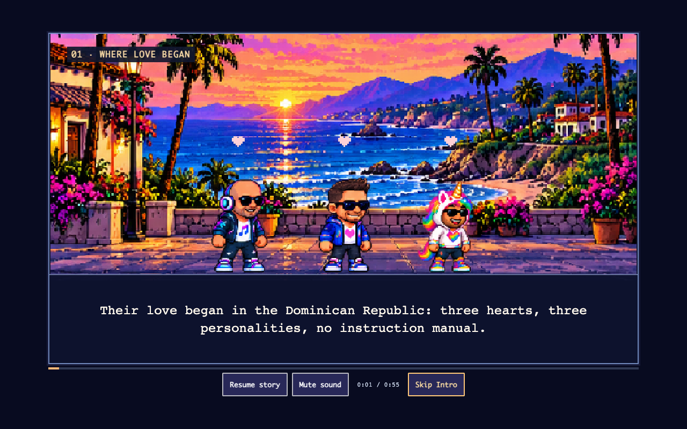
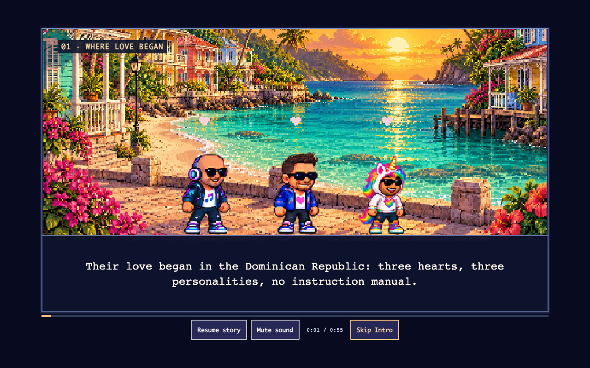
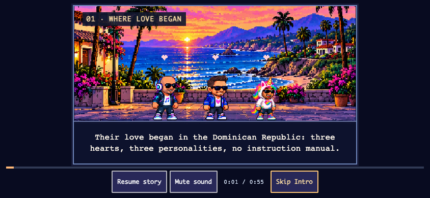
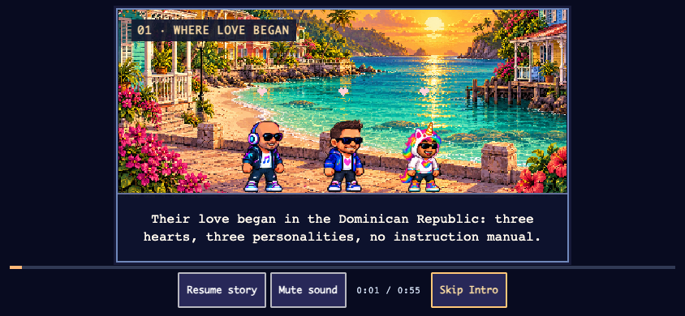
These are naturally timed, silent browser recordings, including a short menu lead-in. The cinematic clock runs for 55 seconds. For synchronized interactive sound, open the game below and choose Our Story. It replays safely without replacing a campaign.
55-second WAV rendered through the existing shared score/synthesizer: gentle → reflective → hopeful → triumphant/adventurous. Saved volume/mute controls remain in the live game. No separate runtime audio engine or commercial recording.
The old painter drew rectangular masks and small rainbow circles after the crew. Both crossed face regions. Those rendering paths are removed. Effects and the 350 ms scenery transition now render before the unchanged approved cast. Reduced motion uses direct scene cuts.
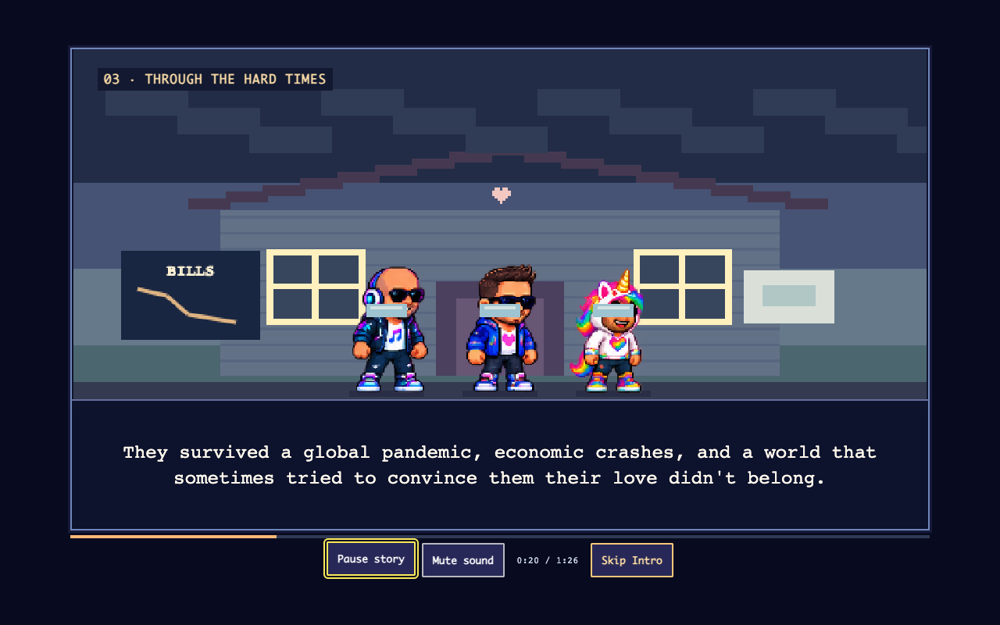
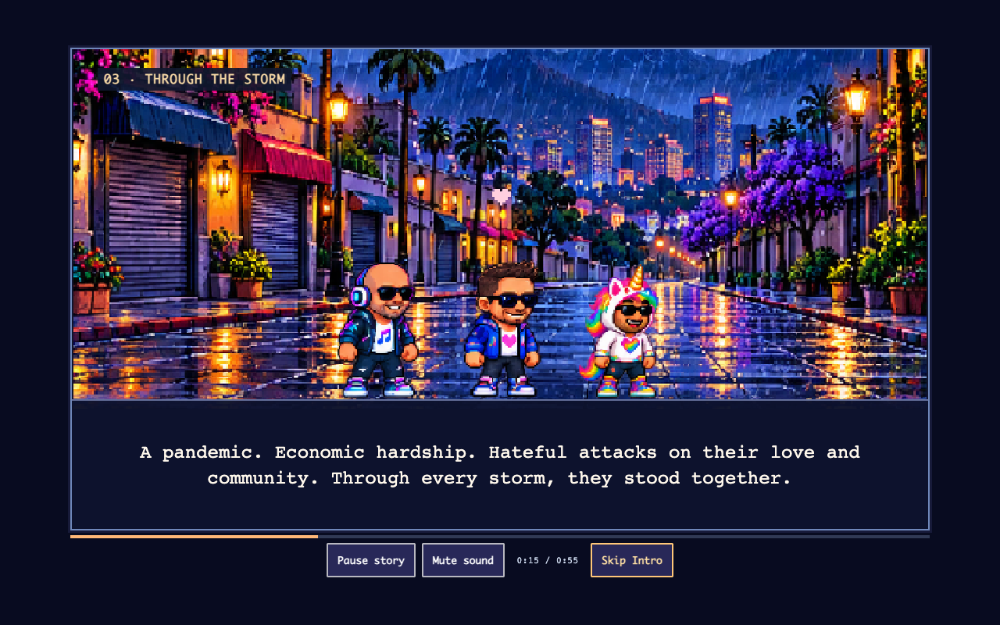
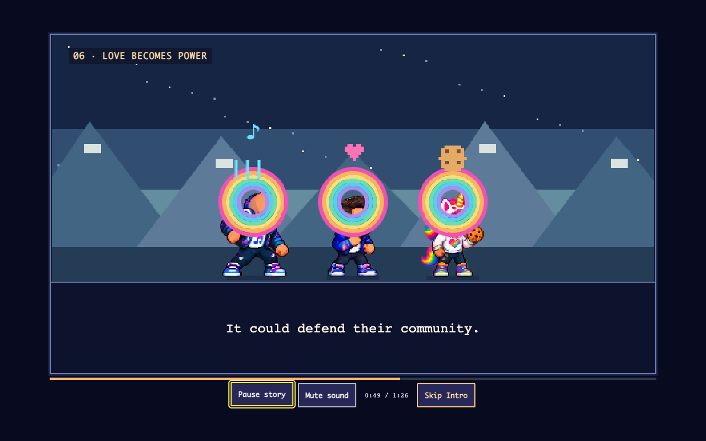
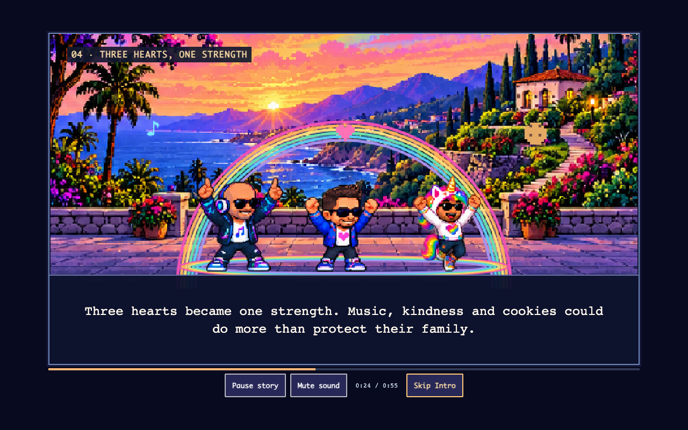
Rigsby and Zoey retain their approved pet strips. Byte hashes and transparent sprite gutters are checked automatically; perceived identity and artistic quality remain owner review decisions.
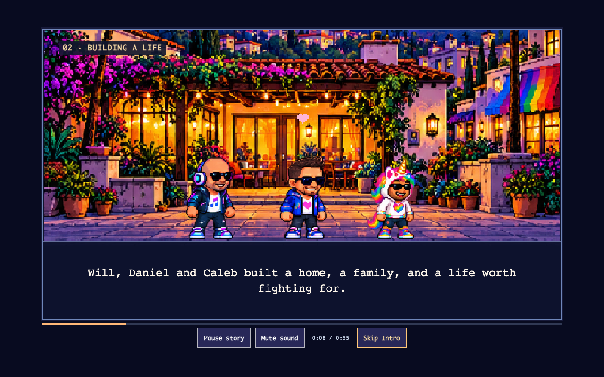
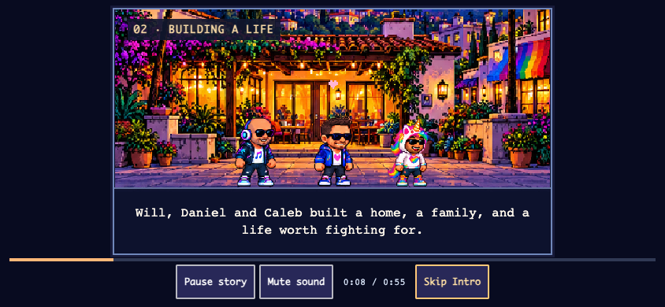
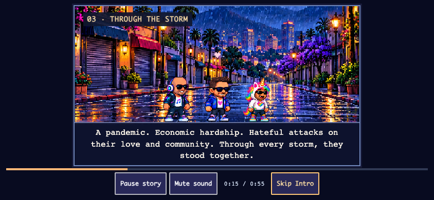
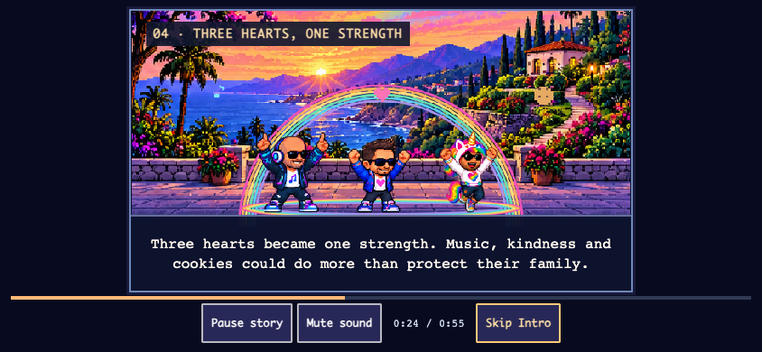
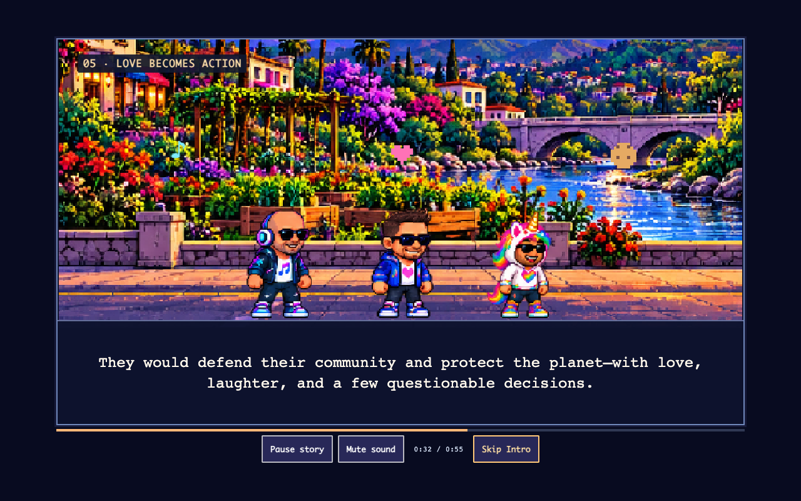
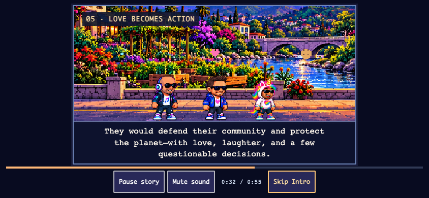
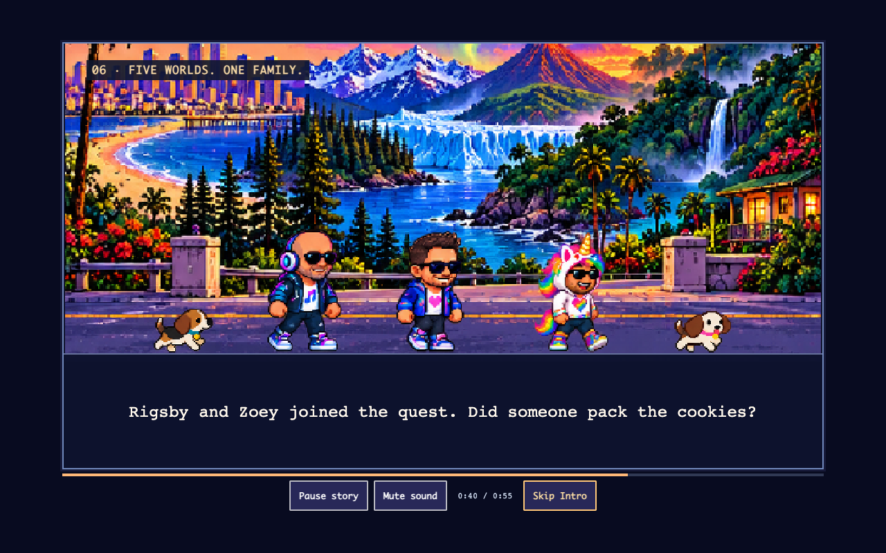
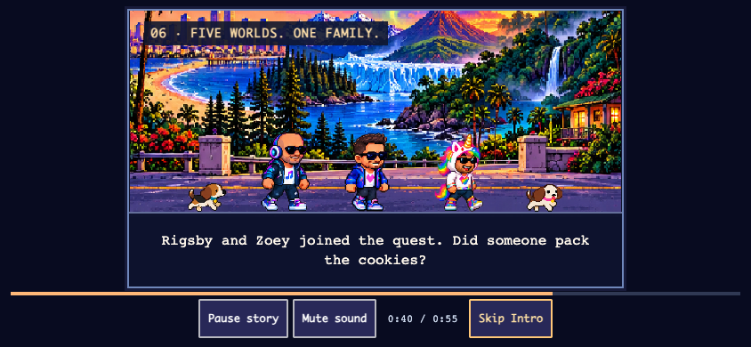
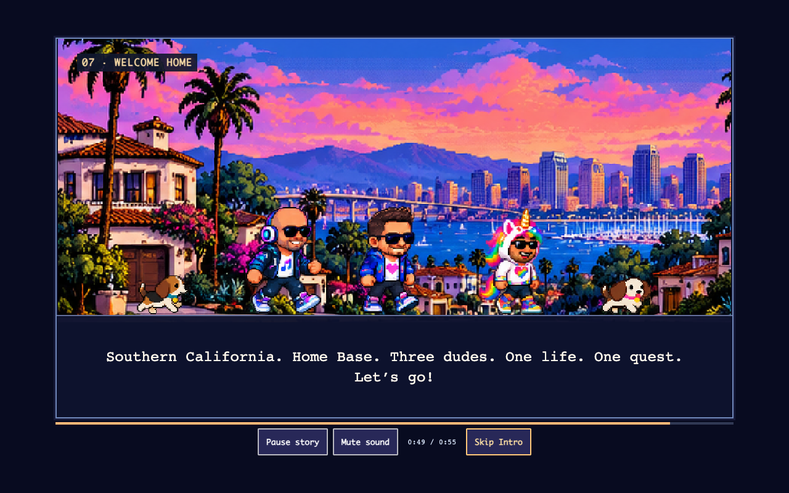
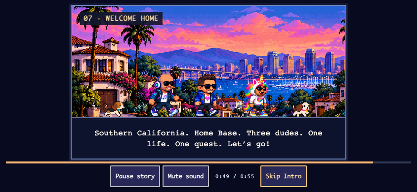
Natural recordings, face pixels, bounds and timer tests · Player-experience checks · All three adventure routes